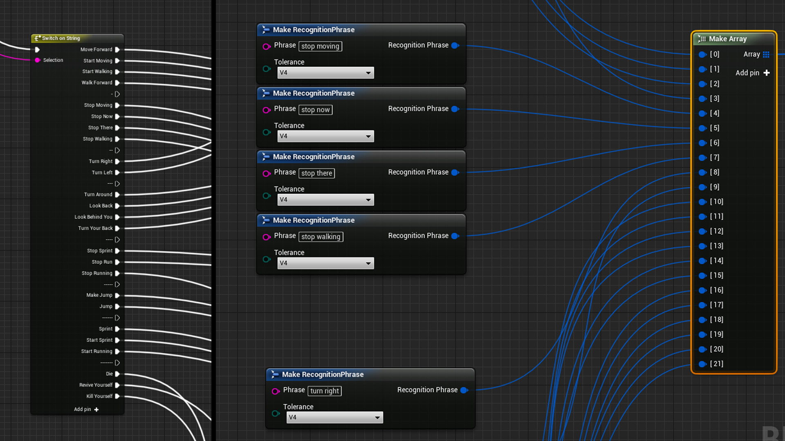

Emergent Gameplay with voice recognition
January 31, 2019Project Details
-
Game Engine :
Unreal Engine (4.21.2)
In this project I tried to bring the emergent gameplay experience thru the way you play the game. Instead using keyboards or gamepads I thought how interesting could be to guide the player with your voice. Throughout the project, I was impressed with the possibilities of actions and goals that can be created through voice recognition. This is a simple prototype just to experiment convert basic phrases into action commands to the player character.
Before explaining the technical side, I would like to emphasis the emergent gameplay concept. As far as I understood, emergent gameplay creates multiple ways to engage the player in a set of combined mechanics or abilities designed to affect the world or impact them. In my research I found these two videos really inspiring for understanding and explore better this concept.
Allright, lets jump for the technical part now! There are a lot of voice recognition/speech to text services out there (Microsoft, IBM, Alexa, Google, etc) click here to find out more about voice recognition services. Luckily I found this plugin called Sphinx-UE4 that allows you to quickly implement this mechanic in your game using blueprints. The plugin doesn’t offer the best voice recognition accuracy but for a prototype purpose and tests it was the best choice :)
- 
After implementing the plugin, I built a basic set of different key phrases to guide the player around the world. The playtests revealed an interesting “feature”: the low speech recognition accuracy created unexpected character behaviors making the players desperate to fix their commands or not let the character do something wrong. The fact that you can talk with the character and get some feedback responses creates a bond between the player and the character improving even more the emergent gameplay engagement.